finitely generated Module over a local ring and fibres of a vector space basis as generators
Proposition
Let  be a local ring with Residue field
be a local ring with Residue field
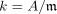
Suppose
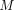
is a finitely generated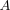
-modules,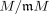
the vector space over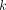
(cf. functor from modules to vector spaces for the residue field).Assume further that
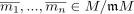
generate as module, and are fibres of
module, and are fibres of 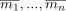
.
Then form a generating set
Proof
w.l.o.g. we may assume that
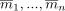
form a-basis Let
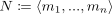
be the generated submodule .Then it remains to show that
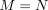
consider the sequence of modules
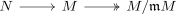
it follows especially that the composition
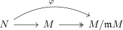
is surjective, as
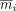
form a k-basis of and hence especially a generating set over
using the first isomorphism theorem for modules there exists a diagram
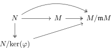
where
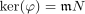
and hence an isomorphism
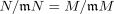
This shows
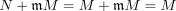
by second Nakaymas Lemma for Jacobson Radical we conclude that
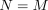